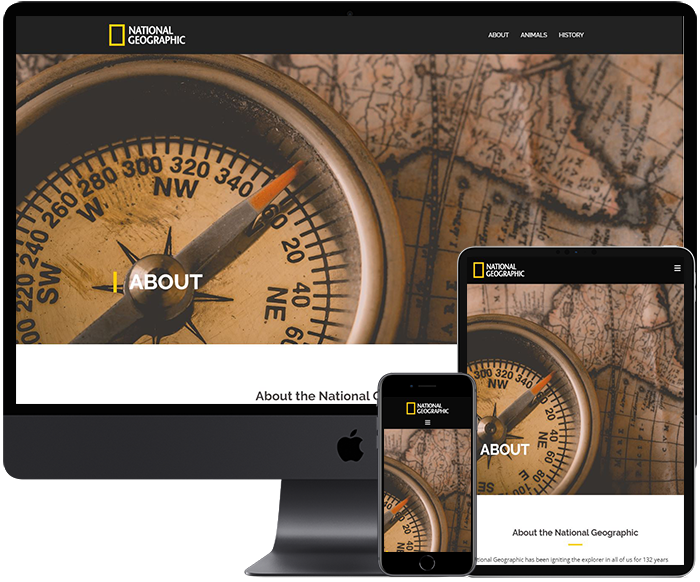

2
2
Kim Sang Chul
안녕하십니까!
신입 퍼블리셔 김상철 입니다.
끊임없이 정진하고 받아들여
한걸음 더 앞으로 나아가는 퍼블리셔가 되겠습니다.
Birth. 1987.09.13
Call. 010-6385-5478
Email. ddol.ksc@gmail.com
Skill.
HTML - 웹 접근성과 웹표준을 준수하는 하드코딩, 시맨틱 태그를 활용한 시맨틱한 아웃라인 구조
CSS - 미디어쿼리를 이용한 반응형 사이트 제작, 모바일 전용 사이트 제작 (디바이스별 호환)
JS, JQuery - Form 값 유효성 체크, 탭, 슬라이드 등의 기능 구현 및 플러그인 사용
Photoshop, Illustrator - 이미지 누끼따기, 레이아웃 자르기, 간단한 이미지 보정/수정/합성
Database - DBMS에서 데이터 생성·조작
Git - Azure, github등에서 사용한 경험이 있으며 기본적인 기능 모두 사용가능합니다.
Go to StoryBoard
Go to Github
3
3
PC Web
기존 웹사이트의 산만한 Interface, Image Alt누락으로인한
접근성 부재를 문제점으로 삼아 트렌드에 맞는 UI와 웹 표준을
지향하는 마크업으로 접근성을 고려하여 새롭게 구축하였습니다.
주제 : BODYFRIEND
기간 : 2020.02.05 ~ 2020.03.06 (약 4주)
스킬 : HTML5/CSS3, Javascript/jQuery, Ajax(json),
PHP, MySQl, Photoshop, Illustrator
W3C 웹표준 마크업 검사, 웹접근성검사(K-WAH), 크로스브라우징 완료
Go To Link
4
4
Mobile Web
메인화면에서 사용자가 원하는 경험을 중심으로 퀵메뉴를 구분하고,
컨텐츠의 기능과 성격에 맞춰 위계를 재정렬한 모바일 전용 웹입니다.
주제 : BODYFRIEND
기간 : 2020.03.09 ~ 2020.03.20 (약 2주)
스킬 : HTML5/CSS3, Javascript/jQuery, Ajax(json), Photoshop, Illustrator
CSS3(media query)와 스크립트를 이용한 기기별 해상도 서비스
W3C 웹표준 마크업 검사, 웹접근성검사(K-WAH), 대표 기기별 테스트 완료
Go To Link
5
5
Responsive Web
"Iron Man" 캐릭터를 주제로 한 사이트로써,
다양한 디바이스에서 폭 넓게 이용할 수 있도록 반응형 웹을 구축하였습니다.
주제 : Iron Man
기간 : 2020.03.23 ~ 2020.03.29 (약 1주)
스킬 : HTML5/CSS3, Javascript/jQuery, Photoshop, Illustrator
CSS3(Media Query)와 스크립트를 이용한 디바이스/해상도별 반응형 UI 구현
W3C 웹표준 마크업 검사, 웹접근성검사(K-WAH), 대표 기기별 테스트 완료
Go To Link
6

6

Wordpress
"National Geographic"을 주제로 한 사이트로써,
워드프레스를 이용해 반응형 웹을 구축하였습니다.
주제 : National Geograrhic
기간 : 2020.03.31 ~ 2020.04.02 (3일)
스킬 : Wordpress, Photoshop, Illustrator
Sydney 테마 사용
Wordpress 플러그인을 사용한 레이아웃 커스터마이징
Go To Link